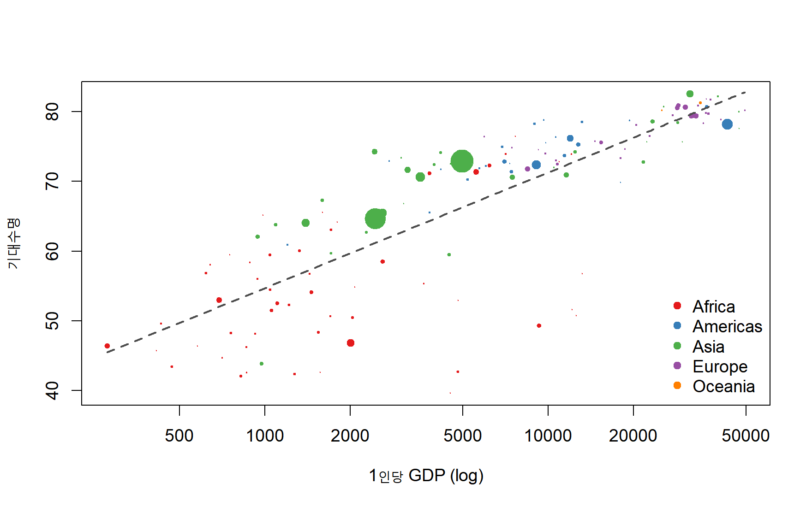
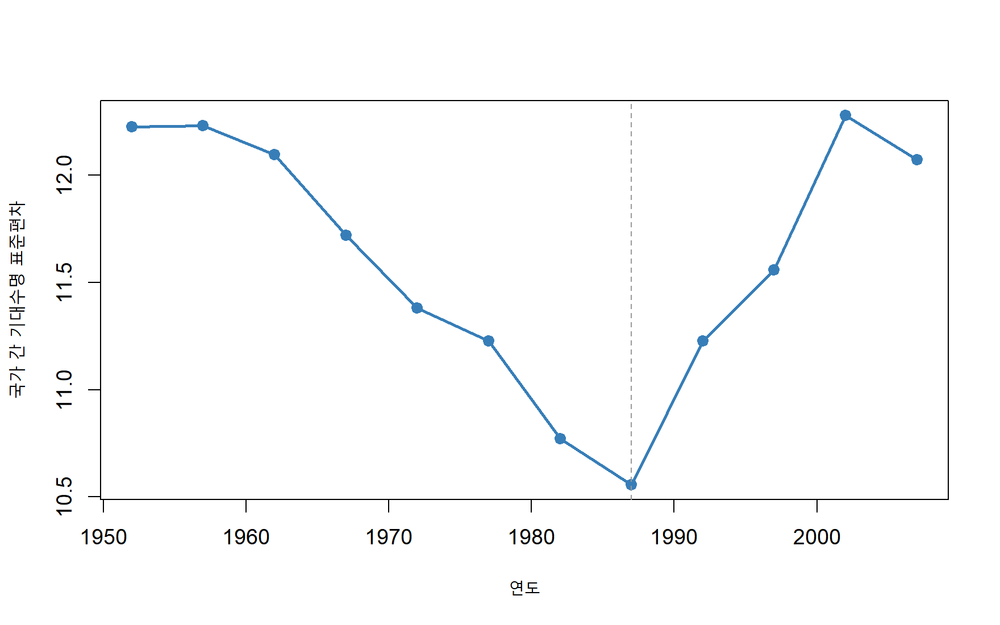
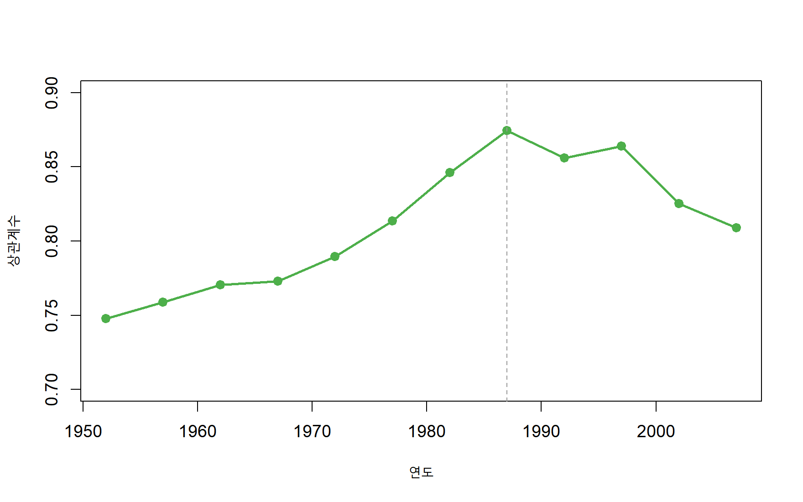
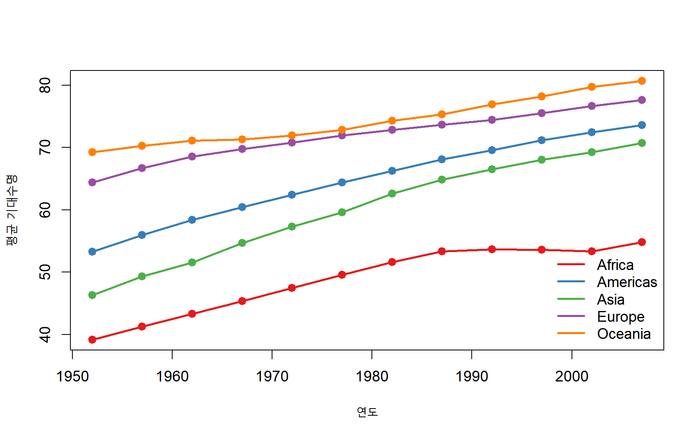
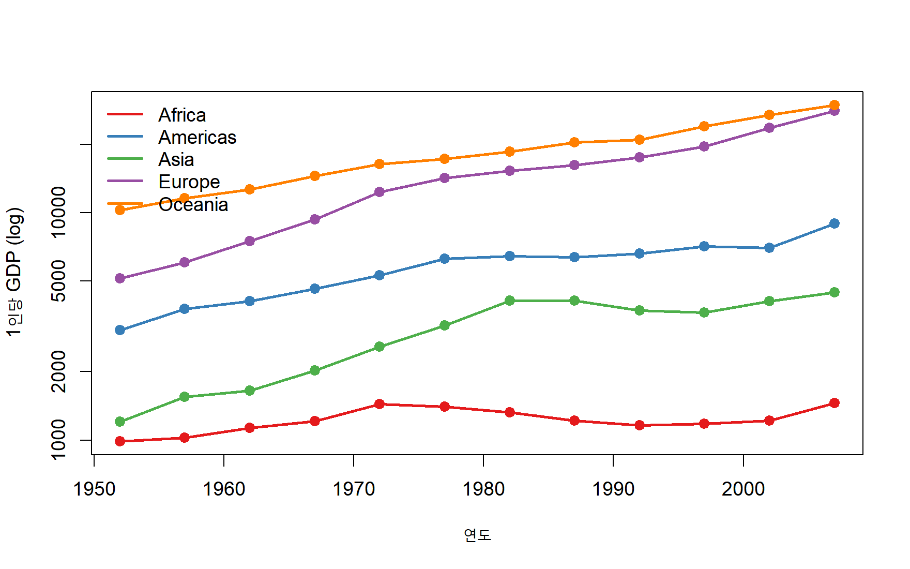

세계 평균 기대수명 (2007년)
67.0세
55년간 기대수명 증가 (1952→2007)
+17.9세
최고–최저 기대수명 격차 (2007년)
43.0세
| 기대수명 구간 | 1952년 | 2007년 |
|---|---|---|
| < 40 | 40 | 1 |
| 40–50 | 42 | 18 |
| 50–60 | 25 | 24 |
| 60–70 | 30 | 16 |
| 70–80 | 5 | 70 |
| 80+ | 0 | 13 |
| 대륙 | 1952 | 1957 | 1962 | 1967 | 1972 | 1977 | 1982 | 1987 | 1992 | 1997 | 2002 | 2007 |
|---|---|---|---|---|---|---|---|---|---|---|---|---|
| Africa | 39.1 | 41.3 | 43.3 | 45.3 | 47.5 | 49.6 | 51.6 | 53.3 | 53.6 | 53.6 | 53.3 | 54.8 |
| Americas | 53.3 | 56.0 | 58.4 | 60.4 | 62.4 | 64.4 | 66.2 | 68.1 | 69.6 | 71.2 | 72.4 | 73.6 |
| Asia | 46.3 | 49.3 | 51.6 | 54.7 | 57.3 | 59.6 | 62.6 | 64.9 | 66.5 | 68.0 | 69.2 | 70.7 |
| Europe | 64.4 | 66.7 | 68.5 | 69.7 | 70.8 | 71.9 | 72.8 | 73.6 | 74.4 | 75.5 | 76.7 | 77.6 |
| Oceania | 69.3 | 70.3 | 71.1 | 71.3 | 71.9 | 72.9 | 74.3 | 75.3 | 76.9 | 78.2 | 79.7 | 80.7 |

| country | gdpPercap | lifeExp | resid |
|---|---|---|---|
| Vietnam | 2441.6 | 74.2 | 13.1 |
| Nicaragua | 2749.3 | 72.9 | 10.9 |
| West Bank and Gaza | 3025.3 | 73.4 | 10.7 |
| Comoros | 986.1 | 65.2 | 10.5 |
| Korea, Dem. Rep. | 1593.1 | 67.3 | 9.2 |
| country | gdpPercap | lifeExp | resid |
|---|---|---|---|
| Swaziland | 4513.5 | 39.6 | -25.9 |
| Angola | 4797.2 | 42.7 | -23.3 |
| Botswana | 12569.9 | 50.7 | -22.2 |
| South Africa | 9269.7 | 49.3 | -21.4 |
| Equatorial Guinea | 12154.1 | 51.6 | -21.1 |


| country | year | lifeExp | d_life | continent |
|---|---|---|---|---|
| Rwanda | 1992 | 23.6 | -20.4 | Africa |
| Zimbabwe | 1997 | 46.8 | -13.6 | Africa |
| Lesotho | 2002 | 44.6 | -11.0 | Africa |
| Swaziland | 2002 | 43.9 | -10.4 | Africa |
| Botswana | 1997 | 52.6 | -10.2 | Africa |
| Cambodia | 1977 | 31.2 | -9.1 | Asia |
| Namibia | 2002 | 51.5 | -7.4 | Africa |
| South Africa | 2002 | 53.4 | -6.9 | Africa |
| Zimbabwe | 2002 | 40.0 | -6.8 | Africa |
| China | 1962 | 44.5 | -6.0 | Asia |
| country | lifeExp_52 | lifeExp_07 | delta |
|---|---|---|---|
| Oman | 37.6 | 75.6 | 38.1 |
| Vietnam | 40.4 | 74.2 | 33.8 |
| Indonesia | 37.5 | 70.7 | 33.2 |
| Saudi Arabia | 39.9 | 72.8 | 32.9 |
| Libya | 42.7 | 74.0 | 31.2 |
| Botswana | 47.6 | 50.7 | 3.1 |
| Lesotho | 42.1 | 42.6 | 0.5 |
| Zambia | 42.0 | 42.4 | 0.3 |
| Swaziland | 41.4 | 39.6 | -1.8 |
| Zimbabwe | 48.5 | 43.5 | -5.0 |

